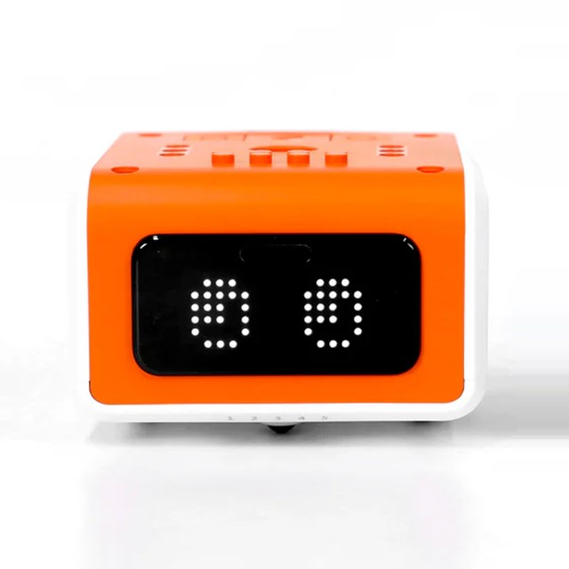
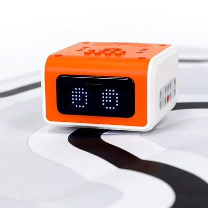
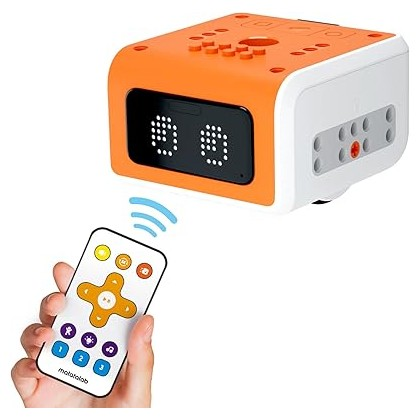

Christmas gift idea · Ages 8-12
One gift. So many ways to play.

VinciBot
Draws pictures

Follows lines

Blocks first,
then Python
then Python

Lights up and
plays music
plays music

Builds with
LEGO bricks
LEGO bricks

Drives by remote
Shop VinciBot